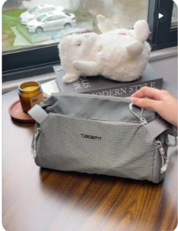
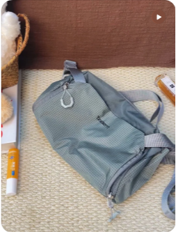

Cool grey-sage subject, warm neutral surroundings, natural window light, no studio gloss, no grain filter, no props that read as playful. The weave and the zips must be legible at 1× — material is the argument.